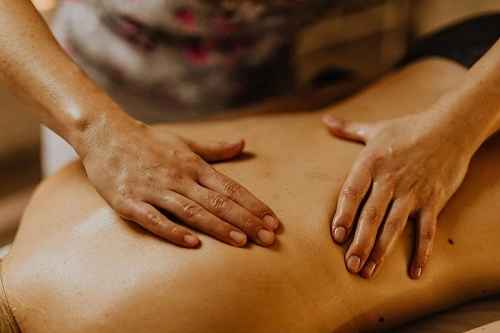

Notre charte
Découvrez notre charte et nos engagements pour vous offrir un service transparent, éthique et respectueux de chacun.
DécouvrirDécouvrez notre charte et nos engagements pour vous offrir un service transparent, éthique et respectueux de chacun.
Découvrir
Charte Éthique Professionnelle des Praticiens en Massage Tantrique
Principes du massage tantrique
Le massage tantrique est une pratique d'« intérieur » axée sur la conscience du corps et de l'énergie vitale, sans finalité érotique.
Engagements du praticien
Le praticien garantit sécurité, respect des limites et transparence.
Engagements du client
Le client s'engage à respecter le cadre, l'hygiène et la non-sexualisation de la séance.
Engagements globales
En tant que masseur certifié de l'école Tantra Âme et Corps.